🎯 Цели занятия
- Познакомиться с Terrain Editor — главным инструментом для рельефа
- Научиться генерировать, добавлять и вырезать ландшафт
- Работать с материалами ландшафта: Grass, Sand, Water, Rock
- Создать свой остров с холмами, рекой и озером
| Этап занятия | Время | Что делаем |
|---|---|---|
| Теория: Terrain Editor | 10 мин | Обзор панели Terrain, все режимы и материалы |
| Задание 1 — Генерация ландшафта | 15 мин | Создаём базовый рельеф (холмы, горы) |
| Задание 2 — Вода и реки | 15 мин | Добавляем реку, озеро, настраиваем уровень воды |
| Задание 3 — Пещеры и обрывы | 10 мин | Вырезаем пещеру, создаём обрыв |
| Задание 4 — Остров своей мечты | 20 мин | Строим целый остров по заданным параметрам |
| Опрос и итоги | 10 мин | Проверяем себя |
| Итого | 80 мин | — |
0 Terrain Editor — все режимы
Terrain Editor (Редактор ландшафта) — это главный инструмент Roblox Studio для создания и изменения рельефа. Он позволяет строить горы, холмы, долины, реки, озёра и пещеры. Вызывается через View → Terrain Editor или вкладку Model.
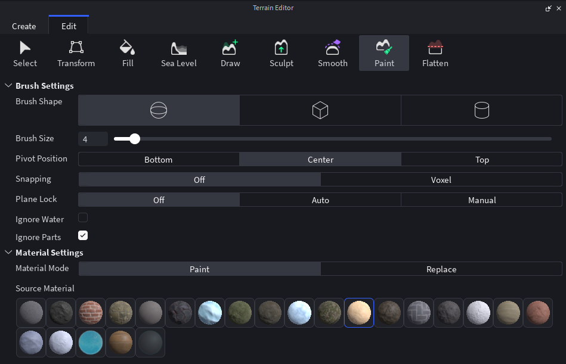
📂 Вкладки
Создаёт новый ландшафт. Можно сгенерировать карту из готовых пресетов: Island (остров), Mountains (горы), Valley (долина), Desert (пустыня) и другие. Также доступен импорт карты высот из изображения.
🏝️ Пример: создание острова для будущей игры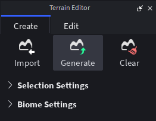
Переключает в режим редактирования существующего ландшафта. Все инструменты ниже (Select, Transform, Fill, Sea Level, Draw, Sculpt, Smooth, Paint, Flatten) доступны именно в этой вкладке.
🔧 Пример: доработка уже созданного рельефа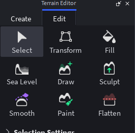
🛠️ Инструменты редактирования (вкладка Edit)
Выделяет отдельные ячейки ландшафта (клетки). Удобно для точечного редактирования: можно выделить конкретную область и применить к ней Transform или Fill.
🎯 Пример: выделение вершины горы для масштабирования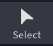
Трансформирует выделенную область. Позволяет перемещать, масштабировать и поворачивать фрагменты ландшафта. Работает только вместе с Select.
📐 Пример: увеличение холма или поворот гряды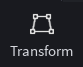
Заполняет выделенную область ландшафтом. Используется для быстрого заполнения пустот, создания платформ или ровных оснований под постройки.
🧱 Пример: создание ровной площадки под замок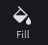
Управляет уровнем воды во всём мире. Можно поднимать или опускать воду — она автоматически заливает все области ниже установленной отметки. Вода не заливается поверх ландшафта, а заполняет впадины.
🌊 Пример: поднять уровень воды, чтобы создать море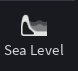
Рисует новый ландшафт, наращивая землю на существующей поверхности. Отлично подходит для создания холмов, гор, насыпей и любых выпуклых форм. Работает как кисть — чем дольше держишь, тем выше поднимается terrain.
⛰️ Пример: дорисовка горного хребта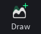
Скульптинг — вытягивает или вдавливает поверхность ландшафта. Позволяет создавать плавные формы, впадины, кратеры и возвышенности. Более тонкий инструмент, чем Draw, для органических форм.
🌀 Пример: создание кратера вулкана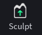
Сглаживает неровности ландшафта. Делает склоны более плавными и естественными, убирает резкие перепады высот и «ступеньки». Незаменим после грубой работы Draw или Sculpt.
🌄 Пример: сгладить холмы для реалистичного пейзажа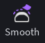
Закрашивает поверхность материалами. Доступны: Grass (трава), Sand (песок), Rock (камень), Snow (снег) и другие. Можно смешивать материалы для реалистичных переходов (например, трава → песок → вода).
🎨 Пример: песчаный пляж + травянистый холм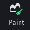
Выравнивает участок ландшафта до заданной высоты. Полезно для создания ровных площадок под дома, дороги или целые города. Можно задать целевую высоту в настройках.
🏗️ Пример: площадка для строительства замка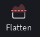
🎨 Материалы для Paint
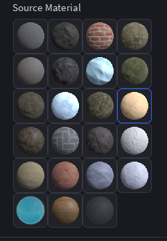
| Материал | Вид | Где использовать |
|---|---|---|
| Grass | Зелёная трава | Холмы, равнины, луга |
| Sand | Песок | Пляжи, берега, пустыни |
| Rock | Скала, камень | Горы, обрывы, пещеры, утёсы |
| Snow | Снег | Вершины гор, холодные биомы |
| Asphalt | Асфальт | Дороги, городские зоны |
| Leaf | Листва | Для лесных массивов (редко) |
🖌️ Настройки кисти (Brush Settings)
Эти параметры управляют поведением кисти при использовании инструментов Draw, Sculpt, Smooth, Paint и Flatten.
Форма кисти: Sphere (сфера), Cube (куб) или Plane (плоскость). Влияет на форму создаваемого рельефа.
⚪ Сфера — для холмов, куб — для террас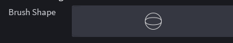
Размер кисти в вокселях (ячейках). Чем больше размер, тем шире область воздействия.
📏 5 — точечная правка, 30 — глобальное изменение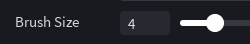
Точка привязки кисти: Bottom (низ), Center (центр) или Top (верх). Определяет, откуда начинается воздействие.
📌 Bottom — для подъёма земли, Top — для углублений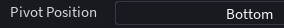
Off — свободное рисование, Voxel — привязка к сетке вокселей для точного позиционирования.
🔲 Voxel — для аккуратных построек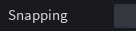
Off — кисть работает в 3D, Auto — автоматическая блокировка по плоскости, Manual — ручной выбор плоскости.
🔒 Auto — удобно для рисования на склонах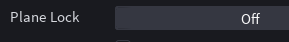
Если включено, кисть не взаимодействует с водой (не изменяет её уровень и не заливает).
💧 Полезно при редактировании суши рядом с водой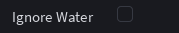
Игнорирует детали (Part) — кисть не будет задевать расставленные объекты, что сохраняет их положение.
🧱 Не даёт случайно задеть постройки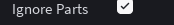
🎨 Настройки материалов (Material Settings)
Эти параметры определяют, как именно будет наноситься материал при использовании инструмента Paint.
Paint — наносит материал поверх существующего, смешиваясь с ним (градиент). Replace — полностью заменяет старый материал на новый (без смешивания).
🎨 Paint — для плавных переходов; Replace — для чётких границ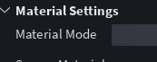
Выбор материала, который будет использоваться для покраски (Grass, Sand, Rock, Snow и т.д.).
🏖️ Выбери Sand, чтобы нарисовать пляж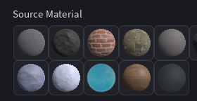
Нажми на вопрос — Алиса ответит тебе прямо сейчас!
🏔️ Задание 1 — Генерация базового ландшафта
Открой Terrain Editor (View → Terrain Editor) и выбери вкладку Generate.
-
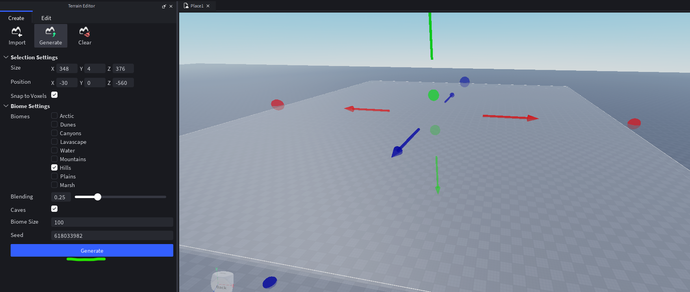
-
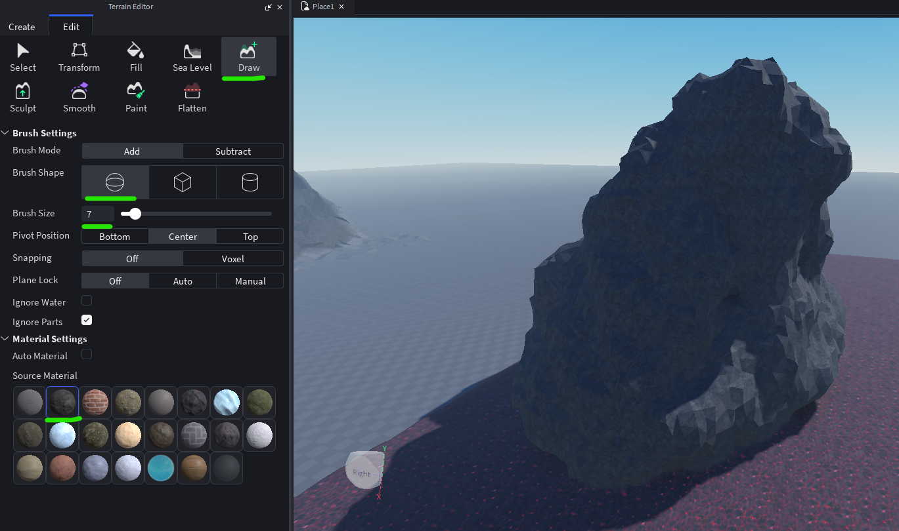
-
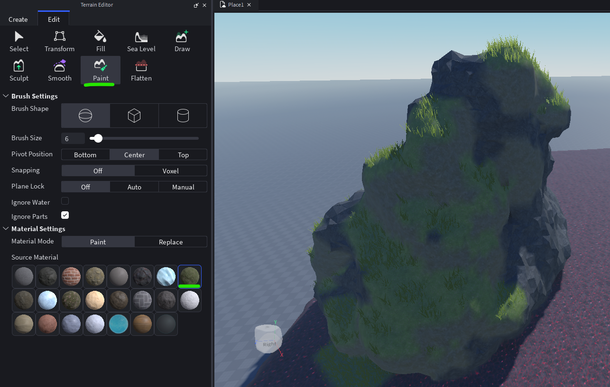
💧 Задание 2 — Вода и берег
-
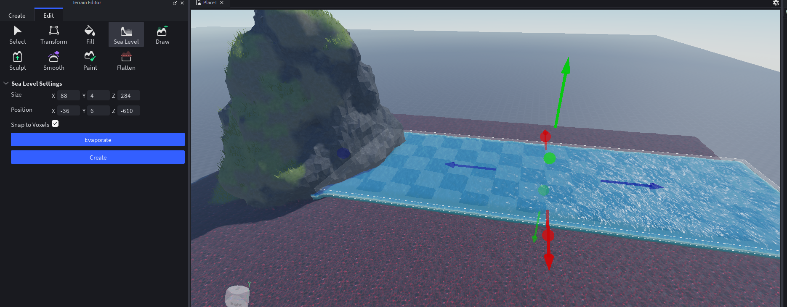
-
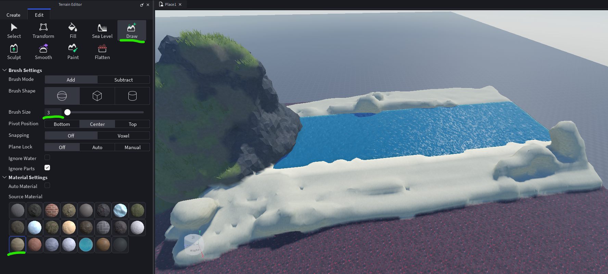
-
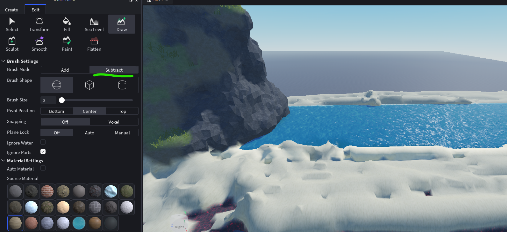
-
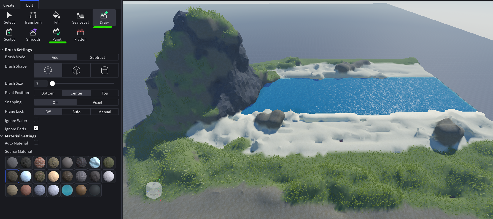
🕳️ Задание 3 — Пещера
-
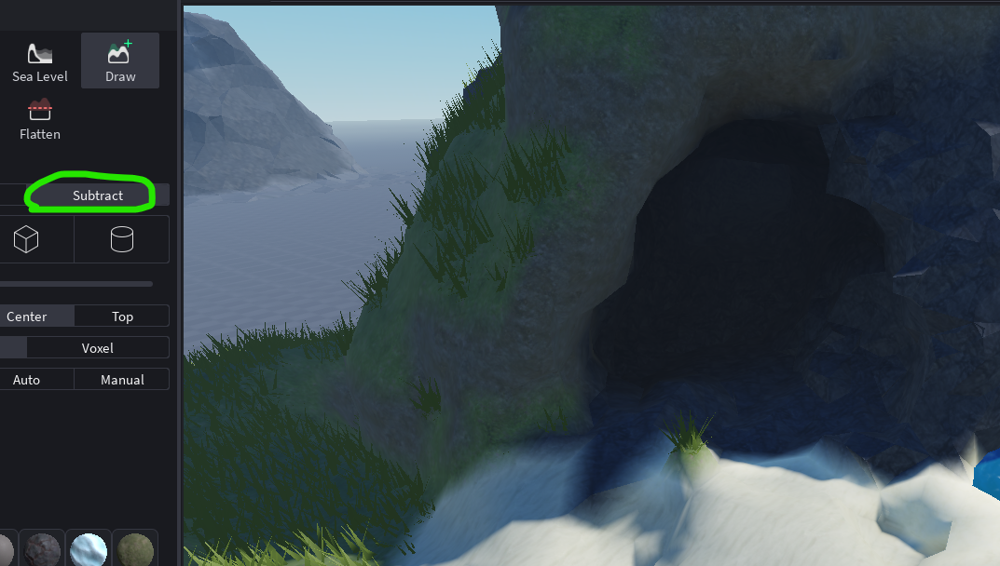
🕳️ Задание 4 — Холмы
-
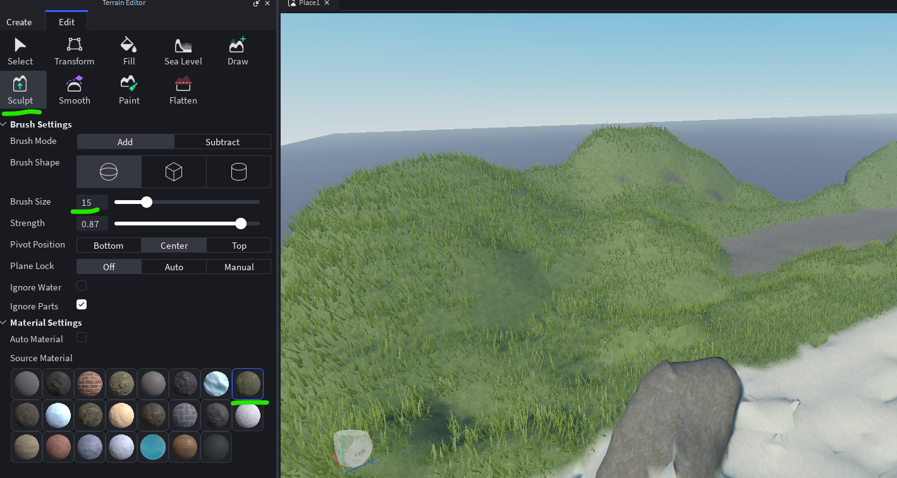
🏝️ Задание 5 — Остров своей мечты
Теперь самостоятельно создай целый остров, используя все режимы. Параметры:
- Остров в форме, похожей на круг (Generate → Island или нарисуй вручную)
- Гора в центре (Add + Paint → Rock)
- Река, спускающаяся с горы к пляжу (Subtract + Water)
- Песчаный пляж по всему берегу (Paint → Sand)
- Маленькое озеро или лагуна
- Пещера с входом на пляже
- Добавь растения,деревья из Toolbox
💭 Твой опыт
Оцени свои ощущения:
🧩 Вопросы по настройкам (Brush & Material)
1. Какая форма кисти лучше всего подходит для создания плавных холмов?
2. Что определяет параметр Brush Size?
3. Для чего служит Pivot Position?
4. Что означает режим Snapping: Voxel?
5. Какой Material Mode полностью заменяет старый материал на новый без смешивания?
6. Где выбирается материал для покраски?
📝 Проверь себя (общие вопросы)
1. Как открыть Terrain Editor?
2. Какой режим нужен, чтобы выкопать яму для озера?
3. Какой инструмент управляет уровнем воды во всём мире?
4. Что делает режим Paint?
5. Какой материал больше всего подходит для пляжа?
6. Можно ли смешивать материалы на одном участке ландшафта?